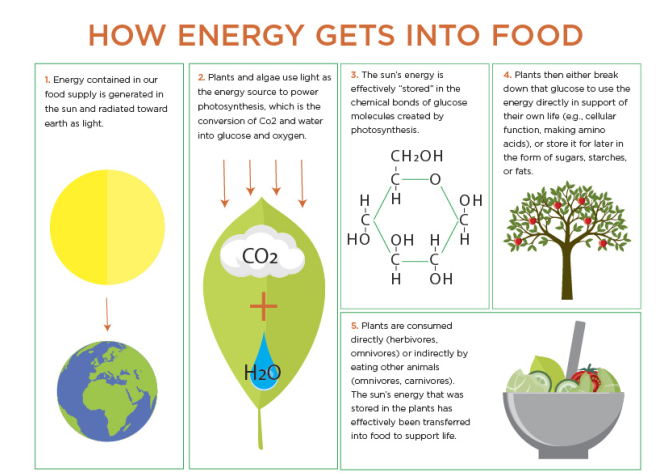
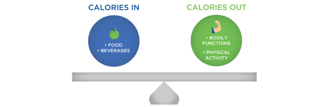
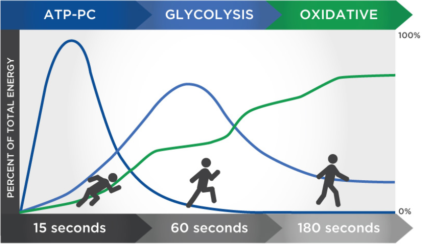

Body Mechanics: Energy Sources and Utilization
Understanding the body's use of energy from various sources is essential for optimizing health and performance. This article delves into the thermodynamics of metabolism and how energy balance affects our bodily functions.
Thermodynamics and Energy Balance
The fundamental law of thermodynamics states that energy cannot be created or destroyed, only transformed. Every calorie consumed influences our body in a way that can either be stored as fat, used for immediate energy, or lost as heat. This process is the same across all human beings, regardless of geographical or cultural differences.
Energy intake, from foods such as carbohydrates, fats, and proteins, is transformed through metabolic pathways to fuel bodily functions and activities. Understanding these processes is crucial for managing health and optimizing physical performance.
Macronutrients as Energy Sources
Carbohydrates, fats, and proteins are metabolized to produce adenosine triphosphate (ATP), the energy currency of the cell. Carbohydrates are typically used for short-term energy needs, while fats are utilized for long-term energy storage. Proteins, though not primarily energy sources, can be converted into glucose through gluconeogenesis when needed.
Energy In vs. Energy Out
The concept of 'Energy In vs. Energy Out' is pivotal in understanding energy balance. 'Energy In' refers to the calories taken in through food and drink, while 'Energy Out' encompasses calories burned through metabolic processes and physical activities. Maintaining a balance between these two can influence body weight and overall health.
Total Daily Energy Expenditure (TDEE) combines the basal metabolic rate, the thermic effect of food, and the energy expended during physical activity. Managing this balance is essential for achieving fitness goals, whether it's weight loss, muscle gain, or maintaining weight.
The Role of ATP in Muscle Function
ATP plays a critical role in muscle contraction and other bodily functions. During physical activity, ATP levels are quickly depleted and must be replenished through metabolic pathways: the phosphagen system, anaerobic glycolysis, and aerobic metabolism.
The efficient management of these energy systems depends on the type of activity. For instance, high-intensity exercises rely more on anaerobic processes for quick energy, while endurance activities use aerobic pathways for sustained energy production.
Practical Applications
Understanding energy sources and their utilization helps in structuring diets and exercise plans tailored to individual energy needs and health goals. Nutrition coaches and fitness trainers can optimize energy usage through targeted dietary strategies and exercise regimens, enhancing both athletic performance and general well-being.
In conclusion, the interplay of body mechanics and energy utilization forms the foundation of our physical capabilities and metabolic health. By mastering the principles of energy sources and thermodynamics, individuals can make informed decisions about their nutrition and activity levels, leading to better health outcomes.